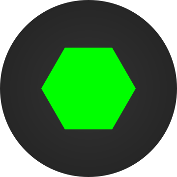
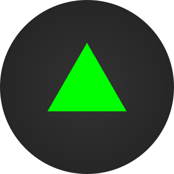
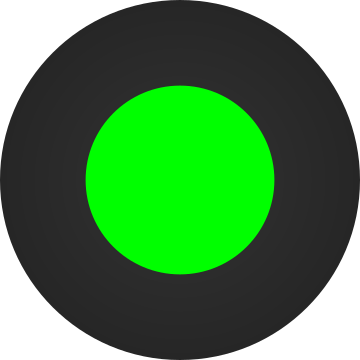
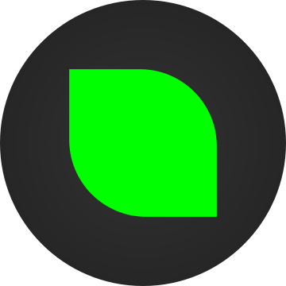
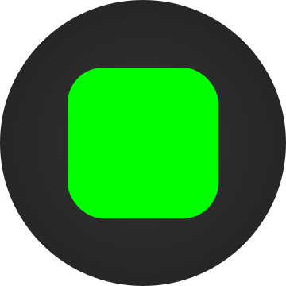

Game
Najdi správný tvar







CREW
Alpha
Prý jsem tuff, ale takový je i život, ne?!
Pookie
Čauky, prý mám moc otázek, ale prý je se mnou sranda.
Brainbox
Vím, že toho moc vím. No, jsem tak trochu jistě nerd.
Unicorn
Většinou mě kolektivní záležitosti děsí, ale miluju být v kreativním módu. Tak to snad spolu nějak zvládneme.